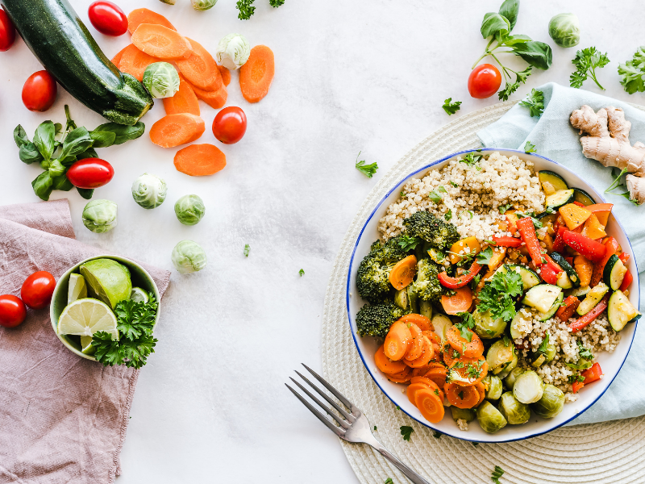
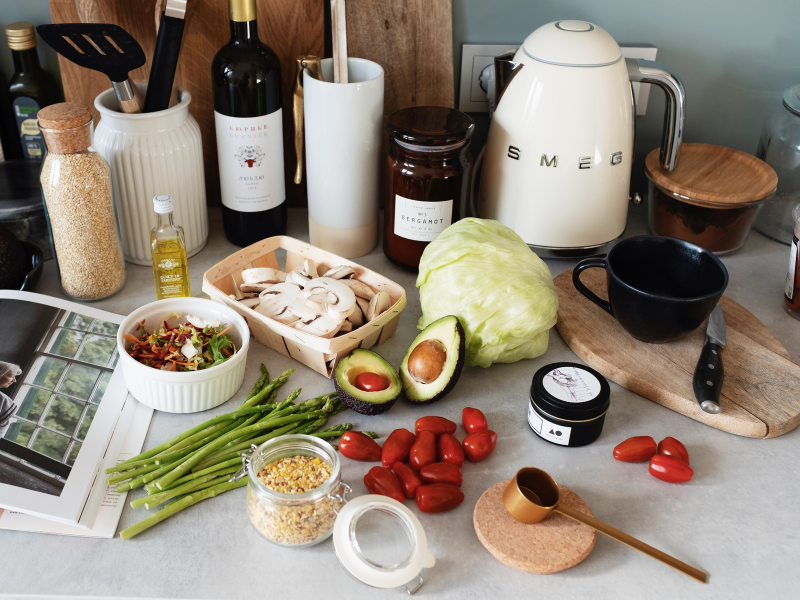
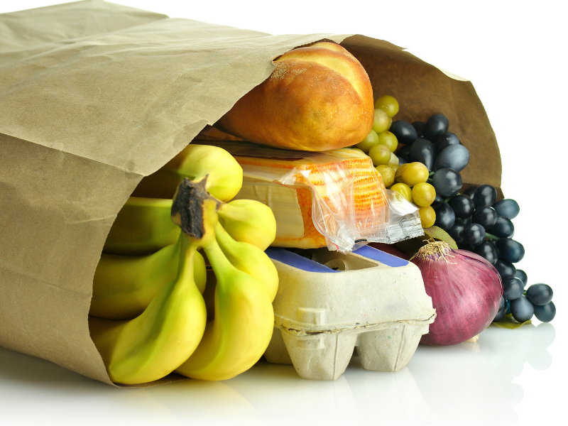
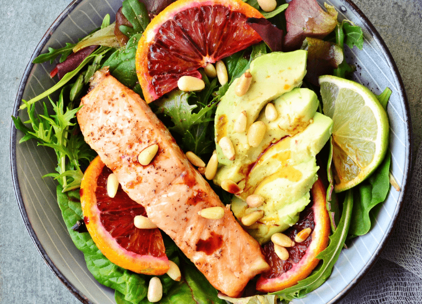

Tips for this Diet

General Tips
- Plan and prepare to eat every 2-3 hours while on this diet.
- Drink lots of water, at least 1/2 your body weight in ounces.
- Eat protein with every meal.

Cooking
- When cooking quinoa, use chicken broth instead of water for more flavor.
- Use spices to add flavor to your food (check for sugar!)
- Mustard is a great condiment for adding flavor.
- Coconut aminos is a great alternative to soy sauce and tamari. It add a lot of flavor and is perfect for stir fry.
- Oil and vinegar, hummus, or guacamole are great as salad dressings.
- Take the time to make several meals ahead of time for last minute needs.

Shopping
- Take time to plan out your meals, including snacks.
- Make a shopping list.
- ALWAYS read the nutrition facts label, especially the list of ingredients. Check out how to read a nurtition facts label.
- Products may look all natural on the front, or even organic, but always check the ingredients. It may not be healthy.
- Eat 7-13 servings of vegetables every day. One serving size is 1/2 cup.
- Use the Dirty Dozen and Clean Fifteen lists to help determine which fruits and vegetables to buy organic.
- Check fliers for sales and coupons at nearby grocery stores.
- Check out online sources like vitacost.com and Amazon.
- Some ingredients in the recipes on this site have affliate links to assist with finding unusual ingredients.
- Check out local farmer's markets or become part of a co-op.
- Buy in bulk. Sam's Club and Costco carry many items in bulk. Check-out the shopping lists on this site.
- When buying frozen fruit & vegetables in bulk, check the ingredients label and make sure you are not buying anything that contains added sugar or preservatives.

Eating Out
- MAD Greens is great for salads. Remember to use oil and vinegar for dressing in the first phase.
- Chipotle is great for a chicken bowl: chicken, stir fry veggies, black beans, lettuce and guacamole.
- Other places ask for dry chicken breast (do not want them to use butter to cook) and steamed veggies without butter.
- Other places you can usually get a side salad and add chicken with oil and vinegar on the side.
- Panera salads work with chicken as the protein and various veggies. They don’t have vinegar, but they do have olive oil as a dressing choice.